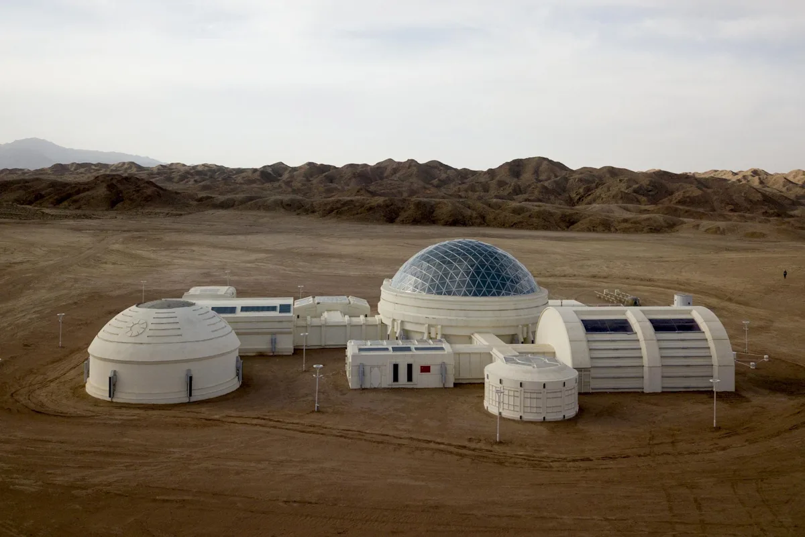

Die Zukunft der KI
KI entwickelt sich rasant weiter – von Chatbots zu autonomen Agenten, von Text zu Bild, Video und Robotik. Was kommt als Nächstes?
Wann kommt AGI?
AGI (Artificial General Intelligence) – eine KI, die intellektuelle Aufgaben ebenso gut wie ein Mensch erledigen kann:
| Experte | Prognose | Kernargument |
|---|---|---|
| Sam Altman (OpenAI) | ca. 2029–2030 | AGI entsteht „innerhalb einiger tausend Tage" |
| Demis Hassabis (DeepMind) | ca. 2030 | 50% Wahrscheinlichkeit innerhalb von 5 Jahren |
| Dario Amodei (Anthropic) | 2026–2027 | Menschengleiche KI-Systeme in naher Zukunft |
| Breite Forschung | 2040–2050 | Konservativer wissenschaftlicher Median |
Wichtig: AGI ist keine Garantie, sondern eine Prognose. Die Meinungen gehen stark auseinander – zwischen Optimismus der Industrie und Skepsis der Wissenschaft.
Aktuelle Entwicklungsrichtungen
Agentische KI
KI-Systeme entwickeln sich von passiven Textgeneratoren zu aktiven Agenten. Ein Agent generiert nicht nur Antworten, sondern:
- Zerlegt Aufgaben in Schritte und plant deren Abfolge
- Ruft Werkzeuge auf (APIs, Browser, Datenbanken, Code)
- Speichert Zwischenergebnisse und überprüft sich selbst
- Arbeitet iterativ, bis das Ergebnis stimmt
Beispiel: Ein KI-Agent könnte eine E-Mail analysieren, relevante Daten aus einer Datenbank abrufen, einen Bericht erstellen und ihn versenden – ohne menschliches Eingreifen.
Multimodale Modelle
Moderne KI verarbeitet nicht nur Text, sondern kombiniert verschiedene Eingabetypen:
- Text + Bild (z.B. GPT-4o, Gemini)
- Text + Audio + Video
- Text + Sensorik (z.B. für Robotik und Industrie)
Dadurch wird KI zur Schnittstelle zwischen digitaler und physischer Welt – ein entscheidender Schritt für Robotik und autonome Systeme.
Effizienz und kleine Modelle
Nicht die Zukunft gehört nur den größten Modellen. Ein Gegentrend zeigt sich:
- Distillation: Wissen großer Modelle wird in kleinere, günstigere übertragen
- On-Device-KI: Kleine Modelle laufen direkt auf Smartphones – schneller und datenschutzfreundlicher
- Hybride Ansätze: Kombination aus Regeln, ML und Retrieval für verlässlichere Ergebnisse
Szenarien für 2030
KI als Arbeitsinfrastruktur
KI-Agenten werden zu Standardbausteinen in Unternehmen: Ticketbearbeitung, Qualitätssicherung, Compliance-Checks, Reporting. Der Nutzen entsteht nicht aus „menschähnlicher Intelligenz", sondern aus niedrigen Koordinationskosten. Gebremst wird das durch fehlende Governance und Haftungsfragen.
KI in der physischen Welt
Wahrnehmung und Sprache verschmelzen zu Kontrollsystemen: Roboter erhalten Anweisungen in natürlicher Sprache, gekoppelt an visuelle Erkennung. Zunächst „assistive Automatisierung" – Menschen bleiben im Loop. Vollautonomie nur dort, wo Umgebungen stark kontrolliert sind (z.B. Lagerhäuser).
Regulierung als Normalfall
Mit dem EU AI Act werden Dokumentationspflichten, Risikoanalysen und Sicherheitstests zum Standard. KI-Compliance wird zur eigenen Branche – ähnlich wie Datenschutz nach Einführung der DSGVO.
KI und die Zukunft der Raumfahrt

Ein weiteres faszinierendes Zukunftsfeld ist die bemannte Raumfahrt. Visionäre wie Elon Musk treiben mit SpaceX die mögliche Besiedlung des Mars aktiv voran. KI wird dabei zunehmend eine Schlüsselrolle übernehmen: Sie steuert nicht nur vollkommen autonome Raketenstarts und Punktlandungen, sondern überwacht auch komplexe Lebenserhaltungssysteme in Echtzeit. Hochintelligente Systeme helfen dabei, riesige Datenmengen auf unbekannten Planeten auszuwerten und Routen für Mars-Rover vorzugeben – ein unverzichtbarer Schritt für das Ziel, eine multiplanetare Spezies zu werden.
Die zentrale Frage
Die Frage ist nicht mehr „Wird KI leistungsfähig genug?" – sondern:
„Wie gehen wir als Gesellschaft mit diesen Umbrüchen verantwortungsvoll um?"
Die Zukunft der KI ist weniger ein „Sprung zu AGI" als eine breite Umstrukturierung von Informations- und Entscheidungsarbeit – begrenzt durch Sicherheit, Recht, Kosten und die Notwendigkeit, Verantwortung klar zu verankern.